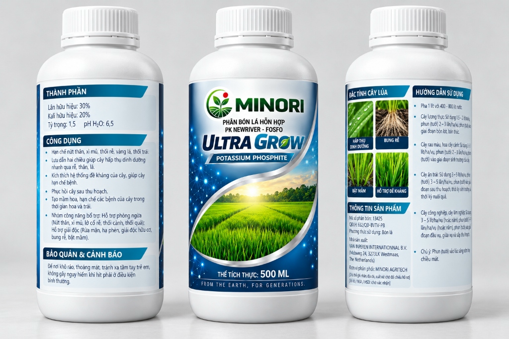

MINORI Ultra Grow
Dưỡng cây chuyên sâu giữa vụ
Sau khi bén rễ và bước vào đẻ nhánh, cây lúa cần nuôi bộ lá, phát triển thân và chuẩn bị làm đòng. Khoảng 20–45 ngày sau sạ là khung theo dõi giữa vụ thường gặp, thay đổi theo từng giống và mùa vụ. MINORI Ultra Grow được định vị là dòng chăm cây chuyên sâu, cao cấp với công thức potassium phosphite 30–20, giúp cây duy trì sức sinh trưởng bền bỉ trước khi bước vào giai đoạn làm đòng.
 MINORI Ultra Grow
MINORI Ultra Grow

🔍 Phóng toHình ảnh đầy đủ MINORI Ultra Grow
Bao bì chuẩn nhận diện chai 500 ml: thành phần công bố, công dụng, đặc tính cây lúa và hướng dẫn sử dụng.
Giai đoạn giữa vụ cần điều gì?
Sau giai đoạn đẻ nhánh, cây lúa bước vào thời kỳ sinh trưởng mạnh. Bộ rễ tốt đầu vụ là điểm khởi đầu; cây còn cần giữ nhịp phát triển ổn định để đi đường dài.
Người nông dân cần cây đủ sức đi qua áp lực giữa vụ, duy trì bộ lá xanh dày quang hợp tốt, rễ thân cứng cáp và sẵn sàng tích lũy dinh dưỡng cho giai đoạn làm đòng.
Chỉ tiêu công bố theo nhãn sản phẩm
Hàm lượng và chỉ tiêu vật lý trích xuất chính xác theo nhãn sản xuất MINORI Ultra Grow:
Nền tảng potassium phosphite tham gia kích hoạt các phản ứng sinh lý của cây, hỗ trợ phát triển rễ và kích hoạt hệ thống đề kháng tự nhiên.
Điều tiết nước trong tế bào, hoạt động khí khổng, tăng cường vận chuyển quang hợp và giúp thân lá cứng cáp, bền bỉ.
Dung dịch đậm đặc, đồng nhất, bám dính tốt trên bề mặt lá và hỗ trợ cây hấp thu dinh dưỡng nhanh qua rễ, thân, lá.
Độ pH lý tưởng, an toàn cho mô lá lúa non, dễ dàng phối hợp trong các lần phun chăm sóc định kỳ.
Chăm cây chuyên sâu – Nuôi dưỡng sức bền
“Bộ rễ tốt chưa đủ, cây phải đủ sức đi đường dài để nuôi đòng và chắc hạt.”
Hướng dẫn sử dụng MINORI Ultra Grow
Trích xuất chính xác hướng dẫn sử dụng từ nhãn sản phẩm MINORI Ultra Grow:
Tỷ lệ pha nước
Pha 1 lít sản phẩm với 400–800 lít nước. Khuấy tan đều trước khi đưa vào bình phun hoặc hệ thống tưới.
Liều lượng cây lương thực
Sử dụng 1,5–2 lít/ha/vụ (đây là tổng lượng khuyến cáo cho cả vụ). Chia đều phun 2–3 lần/ha/vụ vào các giai đoạn bón lót, bón thúc.
Thời điểm phun
Phun vào lúc sáng sớm hoặc chiều mát khi khí khổng lá mở tối ưu, tránh ánh nắng gay gắt để dưỡng chất thẩm thấu trọn vẹn.
Quản lý dinh dưỡng tổng thể
Sản phẩm bón lá hỗ trợ hấp thu nhanh và kích hoạt sức đề kháng; cần kết hợp chặt chẽ với quản lý nước và bón phân gốc cân đối theo nhu cầu thực tế của ruộng.
Câu hỏi thường gặp về MINORI Ultra Grow
Những thắc mắc phổ biến của bà con nông dân về dòng chăm cây chuyên sâu giữa vụ.
1. MINORI Ultra Grow khác gì ở nền tảng công thức?
Theo thông tin Minori Agritech, sản phẩm dựa trên potassium phosphite từ Van Iperen, Hà Lan. Nhãn Minori ghi lân hữu hiệu 30%, kali hữu hiệu 20% và nhà sản xuất tại Hà Lan.
2. Potassium phosphite được nghiên cứu về tác dụng gì?
Nghiên cứu trên lúa mì và lúa ghi nhận thay đổi ở bộ rễ, hoạt động quang hợp hoặc các phản ứng sinh lý của cây trong những điều kiện thí nghiệm cụ thể. Đây là cơ sở cho hướng dưỡng cây chuyên sâu.
3. Số 30–20 có nghĩa là gì?
Nhãn Minori ghi lân hữu hiệu 30% và kali hữu hiệu 20%. Tài liệu Van Iperen ghi tỷ lệ P₂O₅/K₂O quy đổi tương ứng của nguyên liệu potassium phosphite. Phosphite không thay thế nguồn lân phosphate thông thường.
4. Pha và dùng cho lúa như thế nào?
Nhãn ghi pha 1 lít với 400–800 lít nước; với cây lương thực, dùng tổng cộng 1,5–2 lít/ha/vụ, chia 2–3 lần/ha/vụ vào các giai đoạn bón lót, bón thúc. Phun sáng sớm hoặc chiều mát. Mốc 20–45 ngày sau sạ không phải lịch phun cố định cho mọi giống lúa.